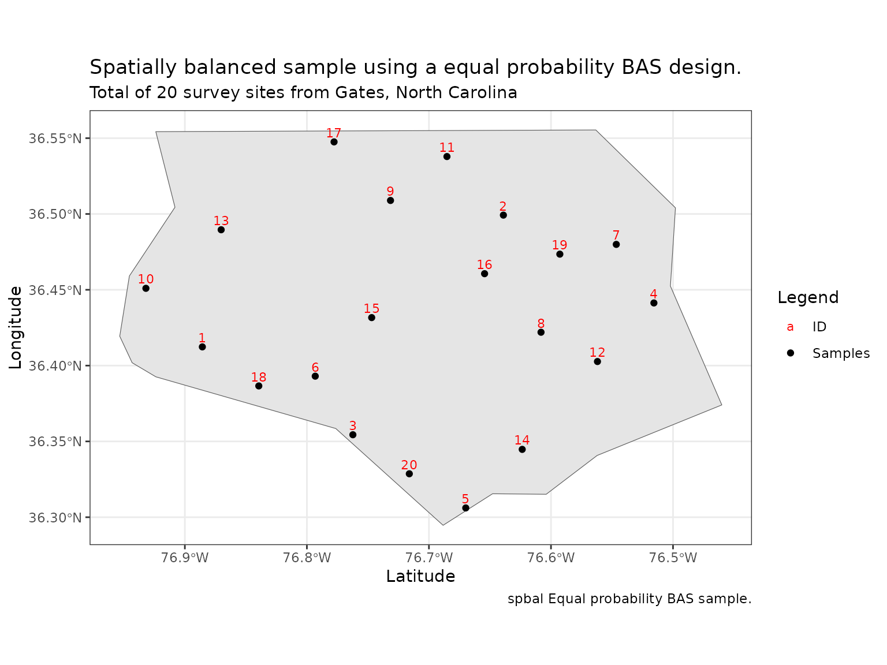
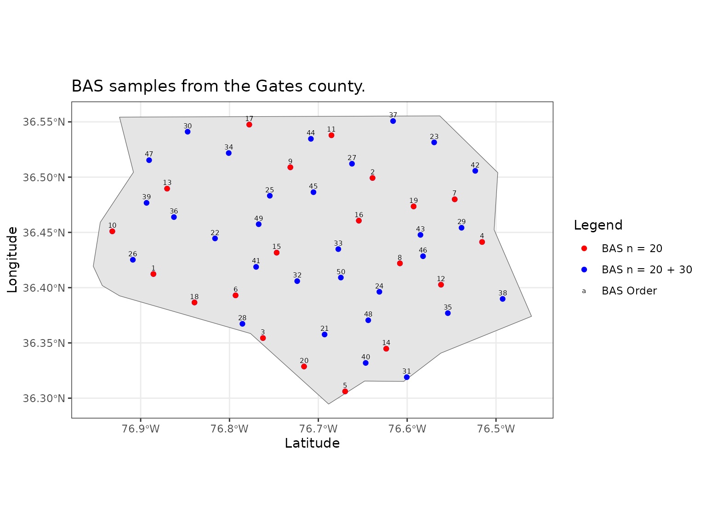
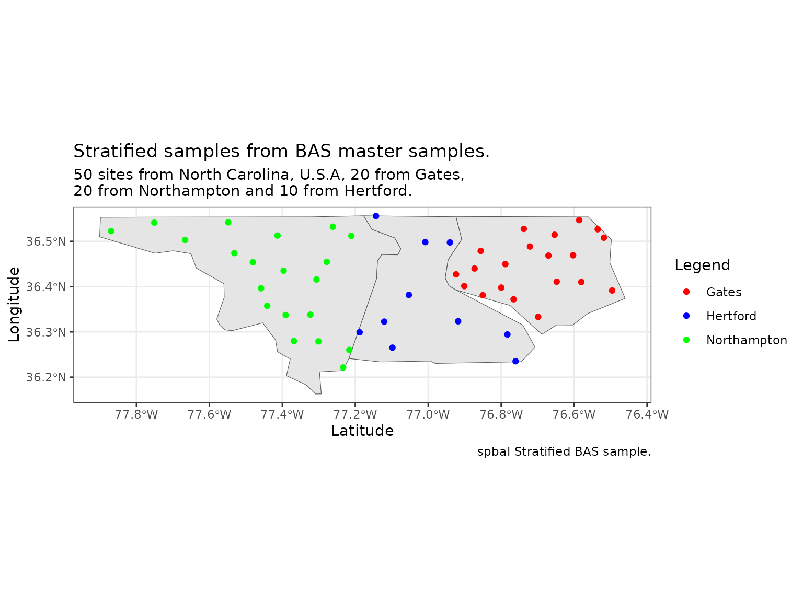
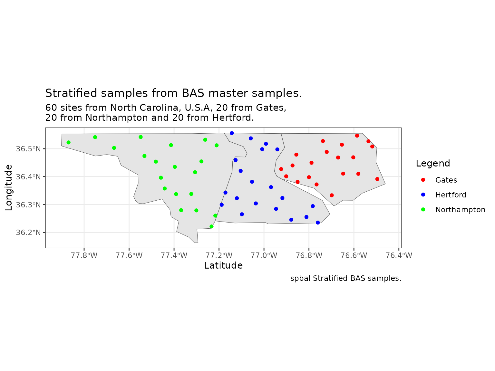
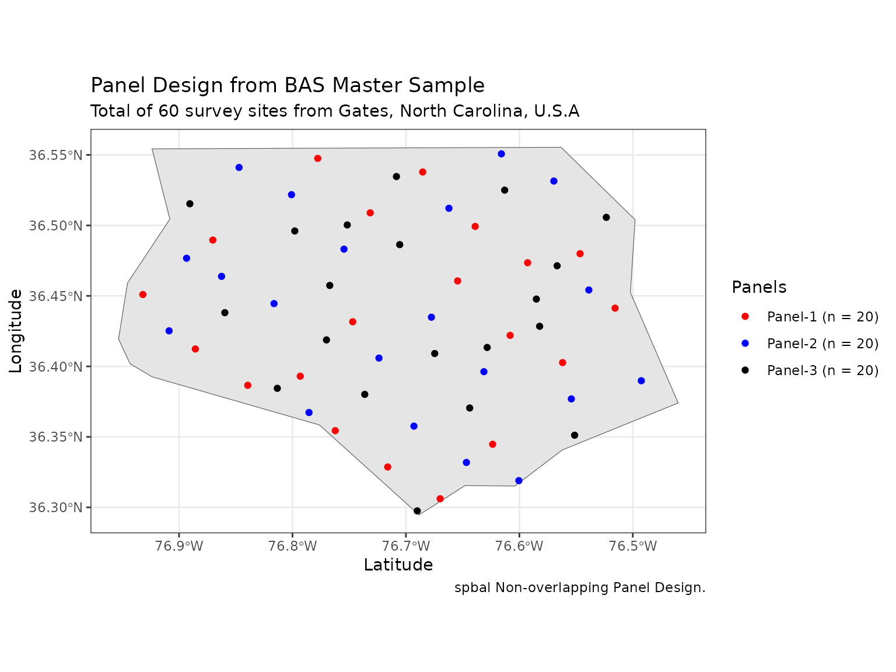
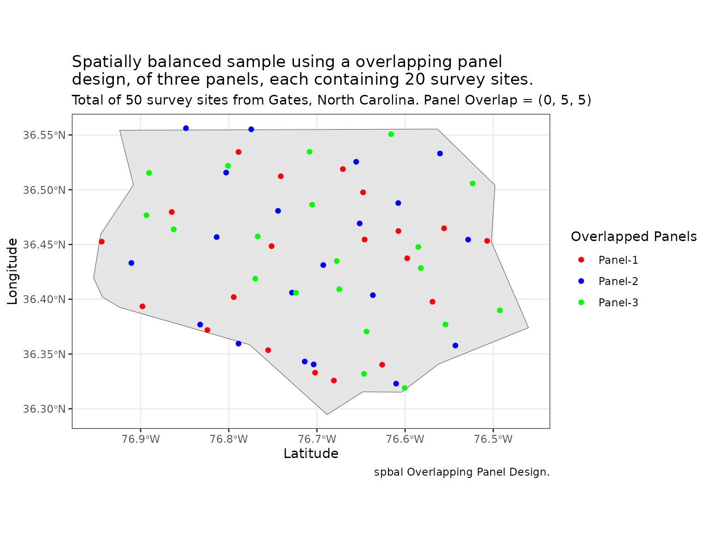
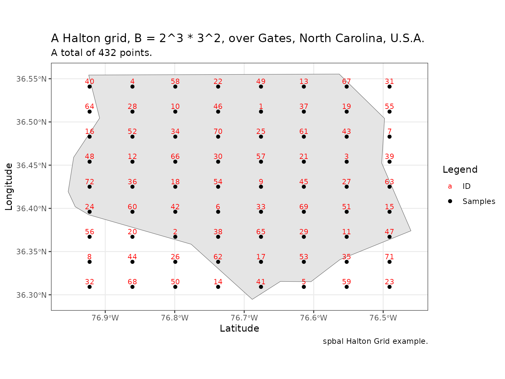
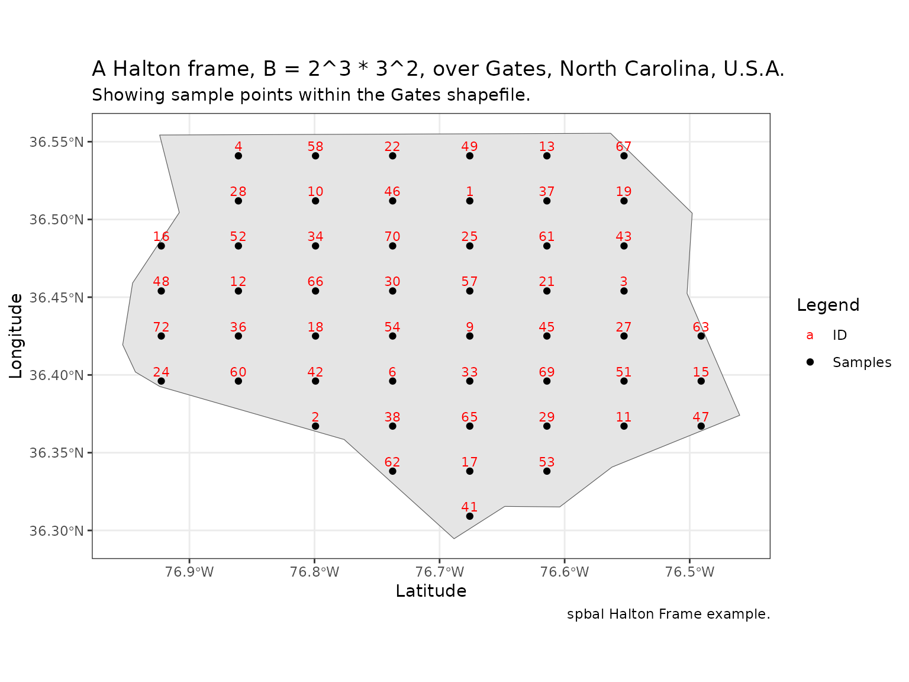
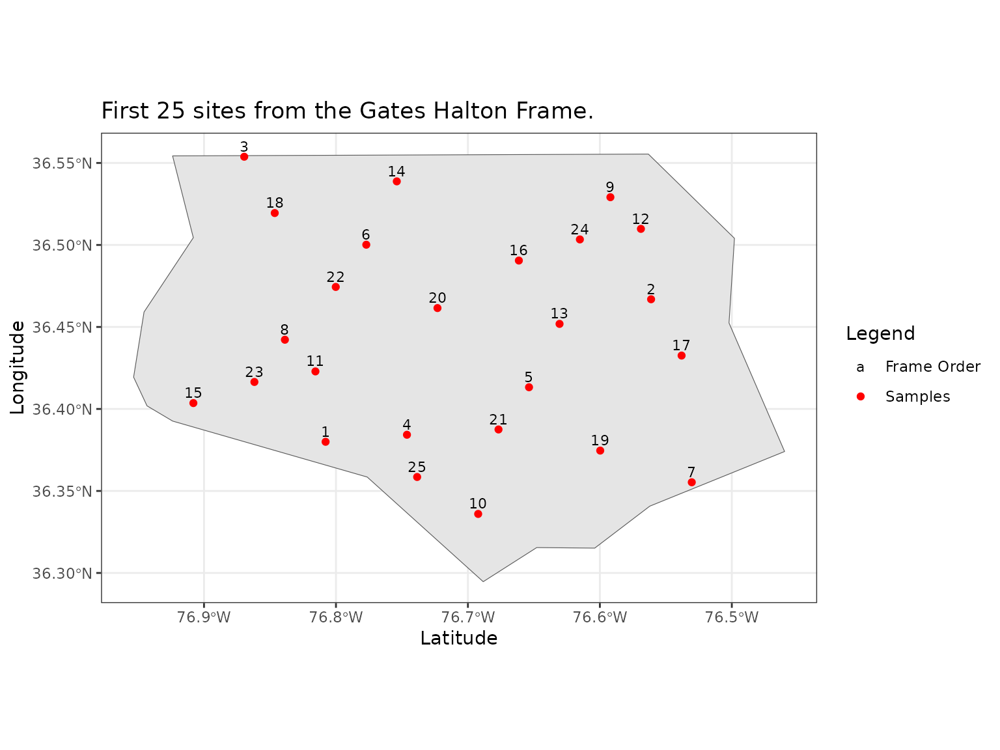
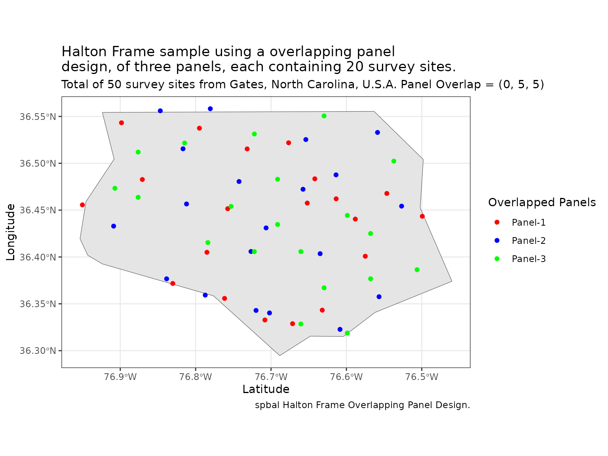

spbal - Spatially Balanced Sampling
spbal 1.0.0
April 2024
spbal.Rmdspbal
This vignette is intended to provide details of the functions and methods provided in the spbal package. The spbal package has three spatially balanced sample designs: BAS, Halton Frames and HIP. This document illustrates how samples are drawn using spbal, including master and stratified sampling applications. The package is freely available from CRAN. This document was created with spbal version \(1.0.0\).
This vignette is divided into the following sections:
- Simple Random Sampling (SRS)
- Balanced acceptance sampling (BAS)
- Halton Frames (HF)
- Halton Iterative Partitioning (HIP)
Lets start by looking at Simple Random Sampling (SRS).
Simple Random Sampling (SRS)
Draw a random sample without replacement from a population.
spbal::SRS()
This function invokes base::sample() to draw a random sample using a user specified random seed. Returned is a list of random positive integers of length sample_size, in the range \(1\) to total_rows, these can then be used to index the original population data.
The following parameters are supported:
- seed - The random seed to be used to draw the current sample. The default is \(42\).
- total_rows - The total number of rows in your population.
- sample_size - The number of rows wanted in the random sample.
All parameter values must be numeric and have values greater than zero, sample_size must be less than total_rows.
spbal::SRS() code example
Function spbal::SRS() returns a list of size sample_size.
# Create a random sample of 20 with a seed of 99 from a population of 100.
rand_samp <- spbal::SRS(seed = 99, total_rows = 100, sample_size = 20)
rand_samp
#> [1] 48 33 44 22 62 32 13 20 31 68 9 82 88 30 86 84 95 14 4 78Balanced Acceptance Samples (BAS)
BAS draws spatially balanced samples from areal resources. To draw BAS samples, spbal requires a study region shapefile and the region’s bounding box. An initial sample size is also needed, which can be easily increased or decreased within spbal for master sampling applications.
spbal::BAS()
The spbal::BAS() function supports the following input parameters:
- shapefile The shape file as a polygon (sp or sf) to select sites for.
- n The number of sites to select. If using stratification it is a named vector containing sample sizes of each group.
- boundingbox The Bounding box around the study area. If a bounding box is not supplied then spbal will generate a bounding box for the shapefile.
- minRadius If specified, the minimum distance, in meters, allowed between sample points. This is applied to the $sample points. Points that meet the minRadius criteria are returned in the minRadius output variable. The default value for minRadius.
- panels A list of integers that define the size of each panel in a non-overlapping panels design. The length of the list determines the number of panels required. The sum of the integers in the panels parameter will determine the total number of samples selected, n. The default value for panels is NULL, this indicates that a non-overlapping panel design is not wanted.
- panel_overlap A list of integers that define the overlap into the previous panel. Is only used when the panels parameter is not NULL. The default value for panel_overlap is NULL. The length of panel_overlap must be equal to the length of panels. The first value is always forced to zero as the first panel never overlaps any region.
- stratum The name of a column in the data.frame attached to shapefile that defines the strata of interest.
-
seeds A vector of two seeds, u1
and u2. If not specified, the default is NULL and will
be defined randomly.
- verbose A boolean, if you want to see any output printed to screen set to TRUE. Helpful if taking a long time. The default is FALSE i.e. no informational messages will be displayed.
The spbal::BAS() function returns a list containing three variables:
- sample containing locations in the BAS sample, in BAS order.
- seeds the u1 and u2 seeds used to generate the sample.
- minRadius containing points from sample that meet the minRadius criteria. If the minRadius parameter is NULL then minRadius will return NULL.
The sample points are returned in the form of a simple feature collection of POINT objects. They have the following attributes:
- SiteID A unique identifier for every sample point. This encodes the BAS order.
- spbalSeqID A unique identifier for every sample point. This encodes the BAS sample order.
- geometry The XY co-ordinates of the sample point in the CRS of the original shapefile.
spbal::BAS() code examples
First, lets define our shapefile, select a region from within it and define a bounding box around it:
# Use the North Carolina shapefile supplied in the sf R package.
shp_file <- sf::st_read(system.file("shape/nc.shp", package="sf"))
#> Reading layer `nc' from data source
#> `/home/phil/R/x86_64-pc-linux-gnu-library/4.3/sf/shape/nc.shp'
#> using driver `ESRI Shapefile'
#> Simple feature collection with 100 features and 14 fields
#> Geometry type: MULTIPOLYGON
#> Dimension: XY
#> Bounding box: xmin: -84.32385 ymin: 33.88199 xmax: -75.45698 ymax: 36.58965
#> Geodetic CRS: NAD27
shp_gates <- shp_file[shp_file$NAME == "Gates",]
shp_gates
#> Simple feature collection with 1 feature and 14 fields
#> Geometry type: MULTIPOLYGON
#> Dimension: XY
#> Bounding box: xmin: -76.95367 ymin: 36.29452 xmax: -76.46035 ymax: 36.55525
#> Geodetic CRS: NAD27
#> AREA PERIMETER CNTY_ CNTY_ID NAME FIPS FIPSNO CRESS_ID BIR74 SID74 NWBIR74
#> 8 0.091 1.284 1835 1835 Gates 37073 37073 37 420 0 254
#> BIR79 SID79 NWBIR79 geometry
#> 8 594 2 371 MULTIPOLYGON (((-76.56251 3...
# Vertically aligned master sample bounding box.
bb <- spbal::BoundingBox(shapefile = shp_gates)Equal probability BAS sample.
This section uses the Gates county loaded above. The first example design is an equal probability BAS sample of \(n = 20\) survey sites from Gates, North Carolina, U.S.A. The call is below:
set.seed(511)
n_samples <- 20
result <- spbal::BAS(shapefile = shp_gates,
n = n_samples,
boundingbox = bb)
BAS20 <- result$sample
BAS20
#> Simple feature collection with 20 features and 2 fields
#> Geometry type: POINT
#> Dimension: XY
#> Bounding box: xmin: -76.93224 ymin: 36.30596 xmax: -76.51599 ymax: 36.54738
#> Geodetic CRS: NAD27
#> First 10 features:
#> SiteID spbalSeqID geometry
#> 1 1 1 POINT (-76.88599 36.41219)
#> 2 2 2 POINT (-76.63932 36.4991)
#> 3 3 3 POINT (-76.76266 36.35425)
#> 4 4 4 POINT (-76.51599 36.44116)
#> 6 6 5 POINT (-76.67016 36.30596)
#> 7 7 6 POINT (-76.79349 36.39287)
#> 8 8 7 POINT (-76.54683 36.47979)
#> 10 10 8 POINT (-76.60849 36.42184)
#> 11 11 9 POINT (-76.73182 36.50876)
#> 13 13 10 POINT (-76.93224 36.45082)The site locations are illustrated below:
# 1. Plot using ggplot
gates <- sf::st_as_sf(shp_gates, coords = c("longitude", "latitude"))
ggplot() +
geom_sf() +
geom_sf(data = gates, size = 4, shape = 23) +
geom_text(data = BAS20,
size = 3,
aes(label = spbalSeqID,
vjust = -0.5,
geometry = geometry,
x = after_stat(x),
y = after_stat(y), color = "ID"),
stat = "sf_coordinates") +
geom_point(data = BAS20,
aes(geometry = geometry,
x = after_stat(x),
y = after_stat(y), colour= "Samples"),
stat = "sf_coordinates"
) +
scale_color_manual(values = c("red", "black"),
name = "Legend") + # Define color scale and legend title
theme_bw() +
labs(x = "Latitude",
y = "Longitude",
title = "Spatially balanced sample using a equal probability BAS design.",
subtitle = "Total of 20 survey sites from Gates, North Carolina",
caption = "spbal Equal probability BAS sample.")
#> Warning in st_point_on_surface.sfc(sf::st_zm(x)): st_point_on_surface may not
#> give correct results for longitude/latitude data
#> Warning in st_point_on_surface.sfc(sf::st_zm(x)): st_point_on_surface may not
#> give correct results for longitude/latitude data
Increase the BAS sample size.
To increase this BAS sample of \(20\) sites to \(50\) sites, we take the first \(50\) points from the random-start Halton sequence that BAS used to draw its sample. spbal achieves this by specifying the random seed integers from the first sample using the following call.
n_samples <- 50
result2 <- spbal::BAS(shapefile = shp_gates,
n = n_samples,
boundingbox = bb,
seeds = result$seed)
BAS50 <- result2$sample
BAS50
#> Simple feature collection with 50 features and 2 fields
#> Geometry type: POINT
#> Dimension: XY
#> Bounding box: xmin: -76.93224 ymin: 36.30596 xmax: -76.49287 ymax: 36.5506
#> Geodetic CRS: NAD27
#> First 10 features:
#> SiteID spbalSeqID geometry
#> 1 1 1 POINT (-76.88599 36.41219)
#> 2 2 2 POINT (-76.63932 36.4991)
#> 3 3 3 POINT (-76.76266 36.35425)
#> 4 4 4 POINT (-76.51599 36.44116)
#> 6 6 5 POINT (-76.67016 36.30596)
#> 7 7 6 POINT (-76.79349 36.39287)
#> 8 8 7 POINT (-76.54683 36.47979)
#> 10 10 8 POINT (-76.60849 36.42184)
#> 11 11 9 POINT (-76.73182 36.50876)
#> 13 13 10 POINT (-76.93224 36.45082)
# Check, first n_samples points in both samples must be the same.
all.equal(BAS20$geometry, BAS50$geometry[1:20])
#> [1] TRUEThe first 20 sites in BAS50 are identical to BAS20. The sample size can be increased arbitrarily from a specified seed, making BAS well-suited for master sampling applications. The critical point is that any sub-sample of consecutive points from a BAS master sample is a bona fide BAS sample. Users can also specify their seed point using seeds = c(u1, u2) to generate a specific random-start Halton sequence, such as resurrecting a previously used BAS sample.
Plot the BAS point ordering, BAS20 and BAS50 using ggplot.
## Convert foreign object to an sf object for ggplot.
gates <- sf::st_as_sf(shp_gates, coords = c("longitude", "latitude"))
ggplot() +
geom_sf() +
geom_sf(data = gates, size = 4, shape = 23) +
geom_text(data = BAS50,
size = 2,
aes(label = BAS50$spbalSeqID,
vjust = -0.7,
geometry = geometry,
x = after_stat(x),
y = after_stat(y), color = "BAS Order"),
stat = "sf_coordinates") +
geom_point(data = BAS50,
aes(geometry = geometry,
x = after_stat(x),
y = after_stat(y), colour = "BAS n = 20 + 30"),
stat = "sf_coordinates")+
geom_point(data = BAS20,
aes(geometry = geometry,
x = after_stat(x),
y = after_stat(y), colour = "BAS n = 20"),
stat = "sf_coordinates"
) +
scale_color_manual(values = c("red","blue","black"),
name = "Legend") +
theme_bw() +
labs(x = "Latitude",
y = "Longitude",
title = "BAS samples from the Gates county.")
Stratified BAS Sample.
It is possible to create stratified samples from BAS master samples using spbal. To implement this design, the input shapefile must have labelled sub-regions or strata, all of which should be enclosed within a single bounding box.
An example of a stratified design from a BAS master sample is shown below. In this design, \(50\) sites are selected from three counties in the state of North Carolina, U.S.A, with \(20\) sites from Gates, \(20\) from Northampton, and \(10\) from Hertford. The code for this stratified design is provided below, and the survey sites within each stratum can be seen in the figure below.
strata <- c("Gates", "Northampton", "Hertford")
n_strata <- c("Gates" = 20, "Northampton" = 20, "Hertford" = 10)
shp_subset <- shp_file[shp_file[["NAME"]] %in% strata,]Define the bounding box for Gates, Northampton and Hertford using spbal.
bb_strata <- spbal::BoundingBox(shapefile = shp_subset)Draw the stratified sample from the BAS master sample and display the first three sites in the Gates region.
set.seed(511)
result3 <- spbal::BAS(shapefile = shp_subset,
n = n_strata,
boundingbox = bb_strata,
stratum = "NAME")
BASMaster <- result3$sample
gates_samp <- BASMaster[BASMaster[["NAME"]] %in% "Gates",]
gates_samp
#> Simple feature collection with 20 features and 3 fields
#> Geometry type: POINT
#> Dimension: XY
#> Bounding box: xmin: -76.92399 ymin: 36.33299 xmax: -76.49623 ymax: 36.54675
#> Geodetic CRS: NAD27
#> First 10 features:
#> SiteID spbalSeqID NAME geometry
#> 1 1 1 Gates POINT (-76.53563 36.5266)
#> 5 9 2 Gates POINT (-76.58066 36.41)
#> 7 13 3 Gates POINT (-76.67071 36.4683)
#> 8 15 4 Gates POINT (-76.85082 36.38085)
#> 13 25 5 Gates POINT (-76.60317 36.46902)
#> 16 31 6 Gates POINT (-76.87333 36.43987)
#> 19 37 7 Gates POINT (-76.73825 36.52732)
#> 23 45 8 Gates POINT (-76.6482 36.41072)
#> 31 61 9 Gates POINT (-76.72136 36.48845)
#> 32 63 10 Gates POINT (-76.90147 36.401)Plot the stratified sample using ggplot.
strat <- sf::st_as_sf(shp_subset, coords = c("longitude", "latitude"))
gates_samp <- BASMaster[BASMaster[["NAME"]] %in% "Gates",]
northampton_samp <- BASMaster[BASMaster[["NAME"]] %in% "Northampton",]
hertford_samp <- BASMaster[BASMaster[["NAME"]] %in% "Hertford",]
ggplot() +
geom_sf() +
geom_sf(data = strat, size = 4, shape = 23) +
geom_point(data = gates_samp,
aes(geometry = geometry,
x = after_stat(x),
y = after_stat(y), colour= "Gates"),
stat = "sf_coordinates"
) +
geom_point(data = northampton_samp,
aes(geometry = geometry,
x = after_stat(x),
y = after_stat(y), colour= "Northampton"),
stat = "sf_coordinates"
) +
geom_point(data = hertford_samp,
aes(geometry = geometry,
x = after_stat(x),
y = after_stat(y), colour= "Hertford"),
stat = "sf_coordinates"
) +
scale_color_manual(values = c("red", "blue", "green"),
name = "Legend") + # Define color scale and legend title
theme_bw() +
labs(x = "Latitude",
y = "Longitude",
title = "Stratified samples from BAS master samples.",
subtitle = "50 sites from North Carolina, U.S.A, 20 from Gates, \n20 from Northampton and 10 from Hertford.",
caption = "spbal Stratified BAS sample.")
#> Warning in st_point_on_surface.sfc(sf::st_zm(x)): st_point_on_surface may not
#> give correct results for longitude/latitude data
#> Warning in st_point_on_surface.sfc(sf::st_zm(x)): st_point_on_surface may not
#> give correct results for longitude/latitude data
#> Warning in st_point_on_surface.sfc(sf::st_zm(x)): st_point_on_surface may not
#> give correct results for longitude/latitude data
Increasing or decreasing strata sample sizes.
The stratum sample sizes can be easily increased or decreased using points from the master sample. For instance, one may double the number of survey sites in the Hertford stratum (from \(10\) to \(20\)) for the stratified design above using the seeds input. The call is below.
n_strata <- c("Gates" = 20, "Northampton" = 20, "Hertford" = 20)
result4 <- spbal::BAS(shapefile = shp_subset,
n = n_strata,
boundingbox = bb_strata,
seeds = result3$seed,
stratum = "NAME")
BASMaster <- result4$sample
gates_samp2 <- BASMaster[BASMaster[["NAME"]] %in% "Gates",]
gates_samp2
#> Simple feature collection with 20 features and 3 fields
#> Geometry type: POINT
#> Dimension: XY
#> Bounding box: xmin: -76.92399 ymin: 36.33299 xmax: -76.49623 ymax: 36.54675
#> Geodetic CRS: NAD27
#> First 10 features:
#> SiteID spbalSeqID NAME geometry
#> 1 1 1 Gates POINT (-76.53563 36.5266)
#> 5 9 2 Gates POINT (-76.58066 36.41)
#> 7 13 3 Gates POINT (-76.67071 36.4683)
#> 8 15 4 Gates POINT (-76.85082 36.38085)
#> 13 25 5 Gates POINT (-76.60317 36.46902)
#> 16 31 6 Gates POINT (-76.87333 36.43987)
#> 19 37 7 Gates POINT (-76.73825 36.52732)
#> 23 45 8 Gates POINT (-76.6482 36.41072)
#> 31 61 9 Gates POINT (-76.72136 36.48845)
#> 32 63 10 Gates POINT (-76.90147 36.401)The \(20\) sites in gates_samp2 are identical to gates_samp because the same seed point was used.
# Ensure gates_samp is equal to the first 10 sites in gates_samp2. Must return TRUE.
all.equal(gates_samp$geometry[1:20], gates_samp2$geometry[1:20])
#> [1] TRUEPlot the increased stratified sample using ggplot.
gates_samp4 <- BASMaster[BASMaster[["NAME"]] %in% "Gates",]
northampton_samp4 <- BASMaster[BASMaster[["NAME"]] %in% "Northampton",]
hertford_samp4 <- BASMaster[BASMaster[["NAME"]] %in% "Hertford",]
ggplot() +
geom_sf() +
geom_sf(data = strat, size = 4, shape = 23) +
geom_point(data = gates_samp4,
aes(geometry = geometry,
x = after_stat(x),
y = after_stat(y), colour= "Gates"),
stat = "sf_coordinates"
) +
geom_point(data = northampton_samp4,
aes(geometry = geometry,
x = after_stat(x),
y = after_stat(y), colour= "Northampton"),
stat = "sf_coordinates"
) +
geom_point(data = hertford_samp4,
aes(geometry = geometry,
x = after_stat(x),
y = after_stat(y), colour= "Hertford"),
stat = "sf_coordinates"
) +
scale_color_manual(values = c("red", "blue", "green"),
name = "Legend") + # Define color scale and legend title
theme_bw() +
labs(x = "Latitude",
y = "Longitude",
title = "Stratified samples from BAS master samples.",
subtitle = "60 sites from North Carolina, U.S.A, 20 from Gates, \n20 from Northampton and 20 from Hertford.",
caption = "spbal Stratified BAS samples.")
#> Warning in st_point_on_surface.sfc(sf::st_zm(x)): st_point_on_surface may not
#> give correct results for longitude/latitude data
#> Warning in st_point_on_surface.sfc(sf::st_zm(x)): st_point_on_surface may not
#> give correct results for longitude/latitude data
#> Warning in st_point_on_surface.sfc(sf::st_zm(x)): st_point_on_surface may not
#> give correct results for longitude/latitude data
Non-Overlapping panel design.
The final BAS example design with spbal is a non-overlapping panel design for surveying over time. This design has three panels containing \(20\) survey sites from the county of Gates, North Carolina, U.S.A. Each panel is a spatially balanced sample of size \(n = 20\), and the collection of sites from all panels is a spatially balanced sample of size \(n = 60\).
set.seed(511)
n_panels <- c(20, 20, 20)
result5 <- spbal::BAS(shapefile = shp_gates,
panels = n_panels,
boundingbox = bb)
BASpanel <- result5$sample
BASpanel
#> Simple feature collection with 60 features and 3 fields
#> Geometry type: POINT
#> Dimension: XY
#> Bounding box: xmin: -76.93224 ymin: 36.29738 xmax: -76.49287 ymax: 36.5506
#> Geodetic CRS: NAD27
#> First 10 features:
#> SiteID spbalSeqID geometry panel_id
#> 1 1 1 POINT (-76.88599 36.41219) 1
#> 2 2 2 POINT (-76.63932 36.4991) 1
#> 3 3 3 POINT (-76.76266 36.35425) 1
#> 4 4 4 POINT (-76.51599 36.44116) 1
#> 6 6 5 POINT (-76.67016 36.30596) 1
#> 7 7 6 POINT (-76.79349 36.39287) 1
#> 8 8 7 POINT (-76.54683 36.47979) 1
#> 10 10 8 POINT (-76.60849 36.42184) 1
#> 11 11 9 POINT (-76.73182 36.50876) 1
#> 13 13 10 POINT (-76.93224 36.45082) 1The sites in panel \(2\) are obtained using the getPanel() function as follows.
panel_2 <- spbal::getPanel(BASpanel, 2)
panel_2 <- panel_2$sample
panel_2
#> Simple feature collection with 20 features and 3 fields
#> Geometry type: POINT
#> Dimension: XY
#> Bounding box: xmin: -76.90911 ymin: 36.31884 xmax: -76.49287 ymax: 36.5506
#> Geodetic CRS: NAD27
#> First 10 features:
#> SiteID spbalSeqID geometry panel_id
#> 30 30 21 POINT (-76.69328 36.35747) 2
#> 31 31 22 POINT (-76.81661 36.44438) 2
#> 32 32 23 POINT (-76.56995 36.53129) 2
#> 34 34 24 POINT (-76.63162 36.39609) 2
#> 35 35 25 POINT (-76.75495 36.483) 2
#> 37 37 26 POINT (-76.90911 36.42506) 2
#> 38 38 27 POINT (-76.66245 36.51198) 2
#> 39 39 28 POINT (-76.78578 36.36712) 2
#> 40 40 29 POINT (-76.53912 36.45403) 2
#> 41 41 30 POINT (-76.84745 36.54095) 2Plot the sample sites in each panel using ggplot.
# to extract the sample points associated with a specific panelid, we can use the following code:
panel_1 <- BASpanel[BASpanel$panel_id == 1,]
panel_2 <- BASpanel[BASpanel$panel_id == 2,]
panel_3 <- BASpanel[BASpanel$panel_id == 3,]
# or use the spbal::getPanel() function.
#panel_1 <- spbal::getPanel(BASpanel, 1)
#panel_2 <- spbal::getPanel(BASpanel, 2)
#panel_3 <- spbal::getPanel(BASpanel, 3)
ggplot() +
geom_sf() +
geom_sf(data = gates, size = 4, shape = 23) +
geom_point(data = panel_1,
aes(geometry = geometry,
x = after_stat(x),
y = after_stat(y), colour= "Panel-1 (n = 20)"),
stat = "sf_coordinates"
) +
geom_point(data = panel_2,
aes(geometry = geometry,
x = after_stat(x),
y = after_stat(y), colour= "Panel-2 (n = 20)"),
stat = "sf_coordinates"
) +
geom_point(data = panel_3,
aes(geometry = geometry,
x = after_stat(x),
y = after_stat(y), colour= "Panel-3 (n = 20)"),
stat = "sf_coordinates"
) +
scale_color_manual(values = c("red", "blue", "black"),
name = "Panels") +
theme_bw() +
labs(x = "Latitude",
y = "Longitude",
title = "Panel Design from BAS Master Sample",
subtitle = "Total of 60 survey sites from Gates, North Carolina, U.S.A",
caption = "spbal Non-overlapping Panel Design.")
Overlapping panel design.
Panel overlaps are also possible in spbal. The following call sets the last five elements from panel \(1\) as the first five elements in panel \(2\) and the last five elements from panel \(2\) as the first five elements in panel \(3\) (\(50\) unique sites). Because the overlaps are sub-samples of consecutive BAS points, they are well-spread over the study region. Furthermore, each panel is a spatially balanced sample of size \(n = 20\), and the collection of sites from all panels is a spatially balanced sample of size \(n = 50\).
set.seed(511)
n_panels <- c(20, 20, 20)
n_panel_overlap <- c(0, 5, 5)
result6 <- spbal::BAS(shapefile = shp_gates,
panels = n_panels,
panel_overlap = n_panel_overlap,
boundingbox = bb)
BASpanel <- result6$sampleThe sites in panel \(2\) are obtained using the getPanel() function as follows. The first five sites in panel \(2\) are also in panel \(1\) so panel_id = \(1, 2\) for these sites.
panel_2 <- spbal::getPanel(BASpanel, 2)
panel_2 <- panel_2$sample
panel_2[1:5,]
#> Simple feature collection with 5 features and 3 fields
#> Geometry type: POINT
#> Dimension: XY
#> Bounding box: xmin: -76.83974 ymin: 36.3285 xmax: -76.59308 ymax: 36.54738
#> Geodetic CRS: NAD27
#> SiteID spbalSeqID geometry panel_id
#> 22 22 16 POINT (-76.65474 36.46047) 1, 2
#> 23 23 17 POINT (-76.77807 36.54738) 1, 2
#> 25 25 18 POINT (-76.83974 36.38644) 1, 2
#> 26 26 19 POINT (-76.59308 36.47335) 1, 2
#> 27 27 20 POINT (-76.71641 36.3285) 1, 2Plot our overlapped samples.
panel_1 <- spbal::getPanel(BASpanel, 1)
panel_2 <- spbal::getPanel(BASpanel, 2)
panel_3 <- spbal::getPanel(BASpanel, 3)
ggplot() +
geom_sf() +
geom_sf(data = gates, size = 4, shape = 23) +
geom_jitter(width = 10, height = 10) +
geom_point(data = sf::st_jitter(panel_1$sample, 0.02),
aes(geometry = geometry,
x = after_stat(x),
y = after_stat(y), colour= "Panel-1"),
stat = "sf_coordinates"
) +
geom_point(data = sf::st_jitter(panel_2$sample, 0.02),
aes(geometry = geometry,
x = after_stat(x),
y = after_stat(y), colour= "Panel-2"),
stat = "sf_coordinates"
) +
geom_point(data = panel_3$sample,
aes(geometry = geometry,
x = after_stat(x),
y = after_stat(y), colour= "Panel-3"),
stat = "sf_coordinates"
) +
scale_color_manual(values = c("red", "blue", "green"),
name = "Overlapped Panels") + # Define color scale and legend title
theme_bw() +
labs(x = "Latitude",
y = "Longitude",
title = "Spatially balanced sample using a overlapping panel \ndesign, of three panels, each containing 20 survey sites.",
subtitle = "Total of 50 survey sites from Gates, North Carolina. Panel Overlap = (0, 5, 5)",
caption = "spbal Overlapping Panel Design.")
#> Warning in st_point_on_surface.sfc(sf::st_zm(x)): st_point_on_surface may not
#> give correct results for longitude/latitude data
#> Warning in st_point_on_surface.sfc(sf::st_zm(x)): st_point_on_surface may not
#> give correct results for longitude/latitude data
#> Warning in st_point_on_surface.sfc(sf::st_zm(x)): st_point_on_surface may not
#> give correct results for longitude/latitude data
Halton Frame (HF)
Halton Frames discretize an areal resource into a spatially ordered grid, where samples of consecutive frame points are spatially balanced.
spbal::HaltonFrame()
The spbal::HaltonFrame() function supports the following input parameters:
- shapefile The shape file as a polygon (sp or sf) to select sites for.
- N The number of points in the frame to generate.
- J The number of grid cells. A list of \(2\) values. The default value is \(c(3, 2)\).
- bases Co-prime base for the Halton Sequence. The default value is \(c(2, 3)\).
- boundingbox The bounding box around the study area. If a bounding box is not supplied then spbal will generate a bounding box for the shapefile.
- panels A list of integers that define the size of each panel in a non-overlapping panels design. The length of the list determines the number of panels required. The sum of the integers in the panels parameter will determine the total number of samples selected, n. The default value for panels is NULL, this indicates that a non-overlapping panel design is not wanted.
- panel_overlap A list of integers that define the overlap into the previous panel. Is only used when the panels parameter is not NULL. The default value for panel_overlap is NULL. The length of panel_overlap must be equal to the length of panels. The first value is always forced to zero as the first panel never overlaps any region.
- stratum The name of a feature column in the shapefile that defines the strata of interest. The default value is NULL indicating that stratification will not be performed.
- seeds A vector of two seeds, u1 and u2. If not specified, the default is NULL and will be defined randomly.
- verbose A boolean, if you want to see any output printed to screen set to TRUE. Helpful if taking a long time. The default is FALSE i.e. no informational messages will be displayed.
The HaltonFrame() function returns a list containing five variables:
- J The number of grid cells. A list of \(2\) values that were used to generate this Halton grid and frame.
- hg.pts.shp Halton grid over the bounding box and study area.
- hf.pts.shp Halton frame, the sample points within the study area.
- bb The bounding box surrounding the study area.
- seeds The \(u1\) and \(u2\) seeds used to generate the sample.
The sample points in hf.pts.shp are returned in the form of a simple feature collection of POINT objects. It has the following features:
- ID A unique identifier, the Halton frame point order.
- spbalSeqID A unique identifier, the study area point order.
- x The point geometry.
spbal::HaltonFrame() code example
To generate Halton Frames, spbal requires a study region shapefile and the region’s bounding box. To illustrate Halton Frames, we discretize the Gates study region into a coarse grid using \(B = 2^{J_1} \times 3^{J_2} = 2^3 \times 3^2\) (a \(9\) by \(8\) grid). The call is below.
set.seed(511)
result6 <- spbal::HaltonFrame(shapefile = shp_gates,
J = c(3, 2),
boundingbox = bb)
Frame <- result6$hf.pts.shp
Grid <- result6$hg.pts.shpSpatially ordered \(9\) by \(8\) Halton grid \((B = 2^{3} * 3^{2} = 72)\) for the Gates county in North Carolina, U.S.A.
# Grid - Halton grid over Gates county.
ggplot() +
geom_sf() +
geom_sf(data = gates, size = 4, shape = 23) +
geom_text(data = Grid,
size = 3,
aes(label = ID,
vjust = -0.5,
geometry = x,
x = after_stat(x),
y = after_stat(y), color = "ID"),
stat = "sf_coordinates") +
geom_point(data = Grid,
aes(geometry = x,
x = after_stat(x),
y = after_stat(y), colour= "Samples"),
stat = "sf_coordinates"
) +
scale_color_manual(values = c("red", "black"),
name = "Legend") + # Define color scale and legend title
theme_bw() +
labs(x = "Latitude",
y = "Longitude",
title = "A Halton grid, B = 2^3 * 3^2, over Gates, North Carolina, U.S.A.",
subtitle = "A total of 432 points.",
caption = "spbal Halton Grid example.")
#> Warning in st_point_on_surface.sfc(sf::st_zm(x)): st_point_on_surface may not
#> give correct results for longitude/latitude data
#> Warning in st_point_on_surface.sfc(sf::st_zm(x)): st_point_on_surface may not
#> give correct results for longitude/latitude data
and the corresponding Halton Frame for the Gates county in North Carolina in the U.S.A.
# Frame - Halton frame over Gates county.
ggplot() +
geom_sf() +
geom_sf(data = gates, size = 4, shape = 23) +
geom_text(data = Frame,
size = 3,
aes(label = ID,
vjust = -0.5,
geometry = x,
x = after_stat(x),
y = after_stat(y), color = "ID"),
stat = "sf_coordinates") +
geom_point(data = Frame,
aes(geometry = x,
x = after_stat(x),
y = after_stat(y), colour= "Samples"),
stat = "sf_coordinates"
) +
scale_color_manual(values = c("red", "black"),
name = "Legend") + # Define color scale and legend title
theme_bw() +
labs(x = "Latitude",
y = "Longitude",
title = "A Halton frame, B = 2^3 * 3^2, over Gates, North Carolina, U.S.A.",
subtitle = "Showing sample points within the Gates shapefile.",
caption = "spbal Halton Frame example.")
#> Warning in st_point_on_surface.sfc(sf::st_zm(x)): st_point_on_surface may not
#> give correct results for longitude/latitude data
#> Warning in st_point_on_surface.sfc(sf::st_zm(x)): st_point_on_surface may not
#> give correct results for longitude/latitude data
Halton frame fine grid
The second example frame generates a fine grid using an approximately regular \(B = 2^8 \times 3^5 = 256 \times 243\) Halton Frame over Gates and draws a spatially balanced sample of \(n = 25\). The call is below.
set.seed(511)
result7 <- spbal::HaltonFrame(shapefile = shp_gates,
J = c(8, 5),
boundingbox = bb)
Frame <- result7$hf.pts.shpDraw \(n = 25\) sites from the Halton Frame using the getSample() function.
The first 25 sites from a \(B = 2^{8} * 3^{5}\) Halton Frame (\(62,208\) grid points covering Gates), the numbering shows the frame’s ordering, where sub-samples of consecutively numbered points are spatially balanced samples.
n_samples <- 25
FrameSample <-getSample(shapefile = Frame,
n = n_samples)
FrameSample <- FrameSample$sample
FrameSample[1:10, c("x", "spbalSeqID")]
#> Simple feature collection with 10 features and 1 field
#> Geometry type: POINT
#> Dimension: XY
#> Bounding box: xmin: -76.86985 ymin: 36.33583 xmax: -76.53069 ymax: 36.55364
#> Geodetic CRS: NAD27
#> x spbalSeqID
#> 1 POINT (-76.80818 36.37982) 1
#> 2 POINT (-76.56152 36.46673) 2
#> 3 POINT (-76.86985 36.55364) 3
#> 5 POINT (-76.74652 36.38411) 4
#> 8 POINT (-76.65402 36.41308) 5
#> 9 POINT (-76.77735 36.49999) 6
#> 10 POINT (-76.53069 36.35514) 7
#> 11 POINT (-76.83901 36.44205) 8
#> 12 POINT (-76.59235 36.52896) 9
#> 16 POINT (-76.69256 36.33583) 10Plot the sample and number the points in the frame’s order (given by spbalSeqID) using ggplot.
ggplot() +
geom_sf() +
geom_sf(data = gates, size = 4, shape = 23) +
geom_text(data = FrameSample,
size = 3,
aes(label = spbalSeqID,
vjust = -0.5,
geometry = x,
x = after_stat(x),
y = after_stat(y), color = "Frame Order"),
stat = "sf_coordinates") +
geom_point(data = FrameSample,
aes(geometry = x,
x = after_stat(x),
y = after_stat(y), colour= "Samples"),
stat = "sf_coordinates"
) +
scale_color_manual(values = c("black", "red"),
name = "Legend") + # Define color scale and legend title
theme_bw() +
labs(x = "Latitude",
y = "Longitude",
title = "First 25 sites from the Gates Halton Frame.")
Spatially balanced sample from a random position
It is also possible to draw a spatially balanced sample from a random position in the frame using the getSample() function. The call for an \(n = 20\) sample is given below. Note the use of the randomStart = TRUE parameter to generate the sample from a random position.
n_samples <- 20
FrameSample <-getSample(shapefile = Frame,
n = n_samples,
randomStart = TRUE)
FrameSample <- FrameSample$sample
FrameSample[1:10, c("x", "spbalSeqID")]
#> Simple feature collection with 10 features and 1 field
#> Geometry type: POINT
#> Dimension: XY
#> Bounding box: xmin: -76.86214 ymin: 36.32188 xmax: -76.52298 ymax: 36.55364
#> Geodetic CRS: NAD27
#> x spbalSeqID
#> 519961 POINT (-76.60006 36.54399) 36721
#> 519971 POINT (-76.72339 36.32188) 36722
#> 520001 POINT (-76.67714 36.35085) 36723
#> 520011 POINT (-76.80047 36.43776) 36724
#> 520021 POINT (-76.55381 36.52467) 36725
#> 520031 POINT (-76.86214 36.37982) 36726
#> 520041 POINT (-76.61548 36.46673) 36727
#> 520051 POINT (-76.73881 36.55364) 36728
#> 520081 POINT (-76.64631 36.47102) 36729
#> 520101 POINT (-76.52298 36.41308) 36730Halton frame overlapping panel design.
The following example generates an overlapping panel design for surveying over time with three panels, each with \(20\) sites with a panel overlap of five.
set.seed(511)
# Three panels, of 20 samples each.
panels <- c(20, 20, 20)
# second panel overlaps first panel by 5, and third panel
# overlaps second panel by 5.
panel_overlap <- c(0, 5, 5)
# generate the sample.
samp <- spbal::HaltonFrame(J = c(4, 3),
boundingbox = bb,
panels = panels,
panel_overlap = panel_overlap,
shapefile = shp_gates)
# get halton frame data from our sample.
samp3 <- samp$hf.pts.shp
samp3
#> Simple feature collection with 309 features and 3 fields
#> Geometry type: POINT
#> Dimension: XY
#> Bounding box: xmin: -76.93826 ymin: 36.29935 xmax: -76.47577 ymax: 36.55042
#> Geodetic CRS: NAD27
#> First 10 features:
#> ID spbalSeqID x panel_id
#> 1 1 1 POINT (-76.62993 36.50214) 1
#> 2 2 2 POINT (-76.75326 36.35729) 1
#> 3 3 3 POINT (-76.5066 36.4442) 1
#> 4 4 4 POINT (-76.90743 36.53111) 1
#> 5 5 5 POINT (-76.66076 36.309) 1
#> 6 6 6 POINT (-76.78409 36.39591) 1
#> 7 7 7 POINT (-76.53743 36.48283) 1
#> 9 9 8 POINT (-76.5991 36.42488) 1
#> 10 10 9 POINT (-76.72243 36.5118) 1
#> 12 12 10 POINT (-76.93826 36.45386) 1
panelid <- 1
olPanel_1 <- spbal::getPanel(samp3, panelid)
panelid <- 2
olPanel_2 <- spbal::getPanel(samp3, panelid)
panelid <- 3
olPanel_3 <- spbal::getPanel(samp3, panelid)
# Plot using ggplot2
ggplot() +
geom_sf() +
geom_sf(data = gates, size = 4, shape = 23) +
geom_jitter(width = 10, height = 10) +
geom_point(data = sf::st_jitter(olPanel_1$sample, 0.02),
aes(geometry = x,
x = after_stat(x),
y = after_stat(y), colour= "Panel-1"),
stat = "sf_coordinates"
) +
geom_point(data = sf::st_jitter(olPanel_2$sample, 0.02),
aes(geometry = x,
x = after_stat(x),
y = after_stat(y), colour= "Panel-2"),
stat = "sf_coordinates"
) +
geom_point(data = olPanel_3$sample,
aes(geometry = x,
x = after_stat(x),
y = after_stat(y), colour= "Panel-3"),
stat = "sf_coordinates"
) +
scale_color_manual(values = c("red",
"blue",
"green"),
name = "Overlapped Panels") + # Define color scale and legend title
theme_bw() +
labs(x = "Latitude",
y = "Longitude",
title = "Halton Frame sample using a overlapping panel \ndesign, of three panels, each containing 20 survey sites.",
subtitle = "Total of 50 survey sites from Gates, North Carolina, U.S.A. Panel Overlap = (0, 5, 5)",
caption = "spbal Halton Frame Overlapping Panel Design.")
#> Warning in st_point_on_surface.sfc(sf::st_zm(x)): st_point_on_surface may not
#> give correct results for longitude/latitude data
#> Warning in st_point_on_surface.sfc(sf::st_zm(x)): st_point_on_surface may not
#> give correct results for longitude/latitude data
#> Warning in st_point_on_surface.sfc(sf::st_zm(x)): st_point_on_surface may not
#> give correct results for longitude/latitude data
Halton Frame Stratified sample.
Stratified samples can be selected from a Halton Frame with spbal. To implement this design, the input shapefile must have labelled sub-regions or strata, which must be enclosed within a single bounding box. We provide a stratified example design for \(50\) sites are selected from three counties in the state of North Carolina, U.S.A - Gates (\(n = 20\)), Northampton (\(n = 30\)), and Hertford (\(n = 10\)).
Load the shape file for the Gates, Northampton and Hertford regions.
strata <- c("Gates", "Northampton", "Hertford")
n_strata <- c("Gates" = 20, "Northampton" = 30, "Hertford" = 10)
shp_subset <- shp_file[shp_file[["NAME"]] %in% strata,]Define the bounding box for Gates, Northampton and Hertford using spbal.
bb_strata <- spbal::BoundingBox(shapefile = shp_subset)Generate an approximately regular \(B = 2^8 \times 3^5 = 256 \times 243\) Halton Frame for the Gates, Northampton and Hertford regions.
set.seed(511)
result9 <- spbal::HaltonFrame(shapefile = shp_subset,
N = n_strata,
J = c(8, 5),
boundingbox = bb_strata,
stratum = "NAME")
Frame <- result9$hf.pts.shpUse the getSample() function to get \(10\) points from the Hertford region.
n_samples <- 10
hertford_samp <- spbal::getSample(Frame,
n = n_samples,
strata = "Hertford",
stratum = "NAME")
hertford_samp <- hertford_samp$sample
hertford_samp[1:10, c("NAME", "spbalSeqID", "x")]
#> Simple feature collection with 10 features and 2 fields
#> Geometry type: POINT
#> Dimension: XY
#> Bounding box: xmin: -77.16286 ymin: 36.23359 xmax: -76.78024 ymax: 36.55427
#> Geodetic CRS: NAD27
#> NAME spbalSeqID x
#> 14 Hertford 1 POINT (-77.06721 36.33691)
#> 31 Hertford 2 POINT (-77.13098 36.55427)
#> 4 Hertford 3 POINT (-76.87589 36.23359)
#> 51 Hertford 4 POINT (-77.00344 36.34227)
#> 7 Hertford 5 POINT (-77.16286 36.26982)
#> 82 Hertford 6 POINT (-76.90778 36.3785)
#> 92 Hertford 7 POINT (-77.03532 36.48718)
#> 101 Hertford 8 POINT (-76.78024 36.30605)
#> 111 Hertford 9 POINT (-77.09909 36.41473)
#> 13 Hertford 10 POINT (-76.97155 36.24567)Panel Design from Halton Frame
Panel designs from Halton Frames are also possible in spbal. The following call sets the last five elements from panel \(1\) as the first five elements in panel \(2\) and the last five elements from panel \(2\) as the first five elements in panel \(3\) (an over-lapping design with \(50\) unique sites). Each panel is a spatially balanced sample of size \(n = 20\), and the collection of sites from all panels is a spatially balanced sample of size \(n = 50\).
Generate an approximately regular \(B = 2^8 \times 3^5 = 256 \times 243\) Halton Frame for Gates.
set.seed(511)
panels <- c(20, 20, 20)
n_panel_overlap <- c(0, 5, 5)
result10 <- spbal::HaltonFrame(shapefile = shp_gates,
panels = panels,
panel_overlap = n_panel_overlap,
J = c(8, 5),
boundingbox = bb)
HaltonFramePanel <- result10$hf.pts.shpNow we obtain the sites in panel \(1\) using the getPanel() function.
panelid <- 1
SitesPanel_1 <- spbal::getPanel(HaltonFramePanel, panelid)
SitesPanel_1 <- SitesPanel_1$sample
SitesPanel_1[1:10, c("x", "spbalSeqID", "panel_id")]
#> Simple feature collection with 10 features and 2 fields
#> Geometry type: POINT
#> Dimension: XY
#> Bounding box: xmin: -76.86985 ymin: 36.33583 xmax: -76.53069 ymax: 36.55364
#> Geodetic CRS: NAD27
#> x spbalSeqID panel_id
#> 1 POINT (-76.80818 36.37982) 1 1
#> 2 POINT (-76.56152 36.46673) 2 1
#> 3 POINT (-76.86985 36.55364) 3 1
#> 5 POINT (-76.74652 36.38411) 4 1
#> 8 POINT (-76.65402 36.41308) 5 1
#> 9 POINT (-76.77735 36.49999) 6 1
#> 10 POINT (-76.53069 36.35514) 7 1
#> 11 POINT (-76.83901 36.44205) 8 1
#> 12 POINT (-76.59235 36.52896) 9 1
#> 16 POINT (-76.69256 36.33583) 10 1Halton Iterative Partitioning (HIP)
HIP draws spatially balanced samples and over-samples from point resources by partitioning the resource into boxes with the same nested structure as Halton boxes. The spbal parameter iterations defines the number of boxes used in the HIP partition and should be larger than the sample size but less than the population size. The iterations parameter also defines the number of units available in the HIP over-sample, where the over-sample contains one unit from each box in the HIP partition.
Halton iterative partitioning (HIP) extends Basic acceptance sampling (BAS) to point resources. It partitions the resource into \(B \geq n\) boxes that have the same nested structure as in BAS, but different sizes. These boxes are then uniquely numbered using a random-start Halton sequence of length \(B\). The HIP sample is obtained by randomly drawing one point from each of the boxes numbered \(1, 2, ..., n\).
HIP draws spatially balanced samples from point resources by partitioning the resource into \(B = 2^{J_1} * 3^{J_2}\) nested boxes.
spbal::HIP()
The spbal::HIP() function supports the following input parameters:
- population A population of point pairs.
- n The number of points to draw from the population. Default \(20\).
- iterations The levels of partitioning required. Default \(7\).
- minRadius If specified, the minimum distance, in meters, allowed between sample points. This is applied to the $overSample.
- panels A list of integers that define the size of each panel in a non-overlapping panels design. The length of the list determines the number of panels required. The sum of the integers in the panels parameter will determine the total number of samples selected, n. The default value for panels is NULL, this indicates that a non-overlapping panel design is not wanted.
- panel_overlap A list of integers that define the overlap into the previous panel. Is only used when the panels parameter is not NULL. The default value for panel_overlap is NULL. The length of panel_overlap must be equal to the length of panels. The first value is always forced to zero as the first panel never overlaps any region.
- verbose A boolean, if you want to see any output printed to screen set to TRUE. Helpful if taking a long time. The default is FALSE i.e. no informational messages will be displayed.
The HIP() function returns a list containing five variables:
- Population The original population.
- HaltonIndex The Halton index for the point. Points will be spread equally across all Halton indices.
- sample The population sample.
- overSample The overSample contains one point from each Halton box. All contiguous sub-samples from oversample are spatially balanced, and the first \(n\) points are identical to sample.
- minRadius This result variable contains the sample created using the minRadius parameter. If the minRadius parameter is not specified then the minRadius variable will contain NULL.
spbal::HIP() code example
The following sample code is used to demonstrate the use of the spbal::HIP() function. Here we are generating \(20\) points from a population of \(5,000\) (random) points with \(7\) levels of partitioning (\(4\) in the first dimension and \(3\) in the second) to give \(2^4\) * \(3^3\) = \(32 * 27\), resulting in \(864\) boxes.
# set random seed
base::set.seed(511)
# define HIP parameters.
pop <- matrix(stats::runif(5000*2), nrow = 5000, ncol = 2)
n <- 20
its <- 7
# Convert the population matrix to an sf point object.
sf_points <- sf::st_as_sf(data.frame(pop), coords = c("X1", "X2"))
dim(sf::st_coordinates(sf_points))
#> [1] 5000 2
# generate HIP sample.
result <- spbal::HIP(population = sf_points,
n = n,
iterations = its)
# HaltonIndex
HaltonIndex <- result$HaltonIndex
# verify all spread equally, should be TRUE.
(length(unique(table(HaltonIndex))) == 1)
#> [1] TRUE
# Population Sample
HIPsample <- result$sample
HIPsample
#> Simple feature collection with 20 features and 2 fields
#> Geometry type: POINT
#> Dimension: XY
#> Bounding box: xmin: 0.04282557 ymin: 0.05113006 xmax: 0.9548381 ymax: 0.9662592
#> CRS: NA
#> First 10 features:
#> HaltonIndex spbalSeqID geometry
#> 1 0 1 POINT (0.9104533 0.1395789)
#> 2 1 2 POINT (0.2864811 0.6609214)
#> 3 2 3 POINT (0.590989 0.9033066)
#> 4 3 4 POINT (0.1926398 0.2614476)
#> 5 4 5 POINT (0.7768502 0.3905133)
#> 6 5 6 POINT (0.4038541 0.8324469)
#> 7 6 7 POINT (0.7109394 0.05113006)
#> 8 7 8 POINT (0.08206315 0.4703658)
#> 9 8 9 POINT (0.9548381 0.6773421)
#> 10 9 10 POINT (0.3318416 0.1603996)The HIP over-sample has \(432\) sites (one site from each of the \(432\) boxes in the HIP partition).
HIPoverSample <- result$overSample
HIPoverSample[1:10, c("geometry", "spbalSeqID")]
#> Simple feature collection with 10 features and 1 field
#> Geometry type: POINT
#> Dimension: XY
#> Bounding box: xmin: 0.08206315 ymin: 0.05113006 xmax: 0.9548381 ymax: 0.9033066
#> CRS: NA
#> geometry spbalSeqID
#> 1 POINT (0.9104533 0.1395789) 1
#> 2 POINT (0.2864811 0.6609214) 2
#> 3 POINT (0.590989 0.9033066) 3
#> 4 POINT (0.1926398 0.2614476) 4
#> 5 POINT (0.7768502 0.3905133) 5
#> 6 POINT (0.4038541 0.8324469) 6
#> 7 POINT (0.7109394 0.05113006) 7
#> 8 POINT (0.08206315 0.4703658) 8
#> 9 POINT (0.9548381 0.6773421) 9
#> 10 POINT (0.3318416 0.1603996) 10
OverSampleSize <- dim(HIPoverSample)[1]
OverSampleSize
#> [1] 432The first \(n\) points in HIPoverSample are identical to HIPsample.
# compare the HIP sample and oversample, they will be the same.
all.equal(HIPsample$geometry[1:n], HIPoverSample$geometry[1:n])
#> [1] TRUEForcing a minimum distance between sites
HIP selects spatially balanced samples, but the algorithm can choose sites closer together than desired, mainly if site density varies significantly over the study region. To enforce a minimum distance between sites, spbal has a minimum distance between sites parameter minRadius. Setting minRadius \(= r > 0\) draws an ordered subset \(S\) from the HIP over-sample, where the size of \(S\) depends on the iterations and minRadius parameters. Taking the first \(n \leq |S|\) sites from \(S\) gives a well-spread sample of \(n\) sites that satisfies the minimum distance between sites requirement.
More Details
The following section provides more details on the spbal package functions getSample and getPanel. These functions only accept objects created by spbal as input via the shapefile parameter.
getSample
The spbal getSample function can be applied to outputs produced by the spbal BAS and HaltonFrame functions.
Non-Stratified samples
Let ‘shp’ be the output from BAS or HaltonFrame, then
- getSample(shapefile = shp, n = n) will output the first \(n\) points from \(shp\).
- getSample(shapefile = shp, n = n, randomStart = TRUE) will output \(n\) points (in the order of the frame) from a random starting point in \(shp\).
Stratified samples
In the case where the input is a stratified sample, both the \(strata\) and \(stratum\) parameters must be specified. If they are specified then the \(n\) parameter need not be specified, if it is, it will be ignored. In this case getSample will return all points of a stratified sample. The parameter \(randomStart\) is not supported when dealing with stratified samples. If specified it will be ignored.
- getSample(shapefile = shp, strata = strata, stratum = stratum) will output all points from \(shp\) where the column name specified by the \(stratum\) parameter contains the value specified by the \(strata\) parameter.
getPanel
The spbal getPanel function can be applied to outputs produced by the spbal BAS and HaltonFrame functions.
Let ‘shp’ be the output from BAS or HaltonFrame, then
- getPanel(shapefile = shp, panelid = panelid) will output all the points belonging to panel \(panelid\) from \(shp\).
Use the R help function for more information on these functions.